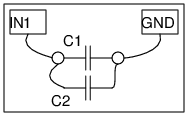

<h2 id="schematic">Schematic</h2>
<hr>
<p></p>
<h2 id="instructions">Instructions</h2>
<hr>
<ul>
<li>Connect the capacitors one by one from IN1 to Ground( any black terminal)</li>
<li>Measure the value by clicking on "Capacitance on IN1"</li>
<li>Do the same using more than one capacitors in parallel</li>
</ul>